O método de animação mais comum chama-se keyframing. As keyframes são criadas em vários pontos da animação e o computador gera as frames de transição (as frames que medeiam entre duas keyframes). A mudança de tamanho, rotação e localização de objectos constituem comportamentos tradicionalmente associados a este tipo de animação.
No processo de criação de uma animação, uma das primeiras decisões a tomar é a duração em frames e o nº de FPS. Como orientação, diga-se que, geralmente, um filme utiliza 24 FPS e o sistema PAL utiliza 25 FPS. Por defeito, o Blender vem configurado para 24 FPS e para uma animação com 250 “frames” (pouco mais de 10 segundos).
Coloca-se uma key no início e no final do movimento pretendido, ou na mudança de dimensão ou rotação de um objecto. Defina o tempo que pretende atribuir a essa animação: se pretende que um objecto se mova do ponto A para o ponto B em 2 segundos, e tiver definida uma velocidade de 25 FPS, introduza 50 frames de separação entre as 2 keys.
1- Comece uma nova cena no Blender, limpe o cubo que surge automaticamente (X). Adicione um plano, uma UV Sphere e uma Lattice. Redimensione o plano aumentando 10 vezes (S > 10).
2- Seleccione a UV Sphere. Mude para visão lateral (NUMPAD 3) e modo de visão Wireframe (para conseguir ver o plano...). Clique em CTRL e, com esta tecla pressionada, utilize o manipulador de translação para mover a esfera em sentido positivo no eixo Z (utilize a seta azul para mover a esfera para cirma). Com o CTRL pressionado, a deslocação dá-se com incrementos fixos o que facilita o alinhamento.
3- Repita o passo anterior para o cubo que representa a Lattice.
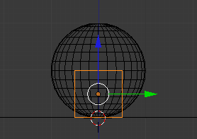4- Seleccione a Lattice e duplique a sua dimensão (S > 2). Volte a alinhar como nos passos anteriores.
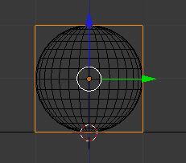5- Vamos criar um parentesco entre a esfera (child) e a Lattice (parent). Seleccione a esfera e depois a Lattice. Clique em CTRL+P e seleccione a opção Lattice Deform para criar um parentesco de tipo especial [mais informações sobre isto no tutorial nº 34].
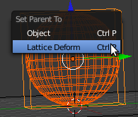6- Vamos inserir keyframes na Lattice, nas frames 1, 51 e 101 para criar o movimento da bola a saltar. Em baixo, surgem imagens mostrando o posicionamento da Lattice/esfera nas frames 1, 51 e 101.
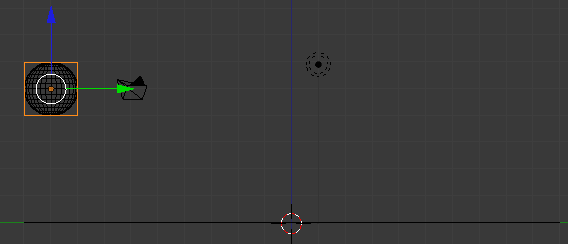 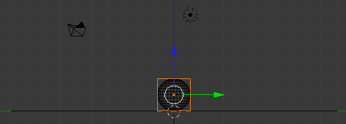 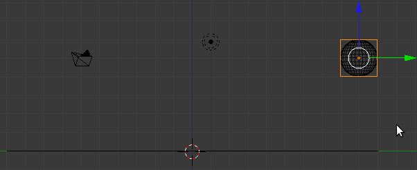7- Na frames 45 e 65 insira keyframes LocRotScale na Lattice para bloquear a forma. Nessas frames, a nossa esfera irá ter a forma normal ou original.
8- Na frame 51, ponto de contacto entre a esfera e o plano, vamos utilizar a Lattice para deformar a esfera, aplicando o princípio clássico do Squash & Stretch.
Escolha o cursor 3D como pivot para a operação. Certifique-se que o cursor 3D está no local correcto: no meio da esfera e da Lattice mas ao nível do plano.
Seleccione a Lattice e redimensione a sua altura (escala em Z): S > Z > 0.8
Ainda com a Lattice seleccionada, redimensione a escala em X e Y em simultâneo: S > SHIFT+Z > 1.2
[Se clicar em SHIFT+Z, exclui o Z da selecção, seleccionar os restantes. Ou seja, selecciona o X e Y]
Como estamos a utilizar o cursor 3D como pivot, o redimensionamento é feito tendo em conta o ponto de contacto e não, como habitualmente, o próprio centro do objecto.
Neste caso, optámos por inserir mais frames na saída [entre o ponto de contacto (51) e o ponto de retorno à forma original (65)] do que na entrada [entre a última forma original intacta (45) e o ponto de contacto (51)].
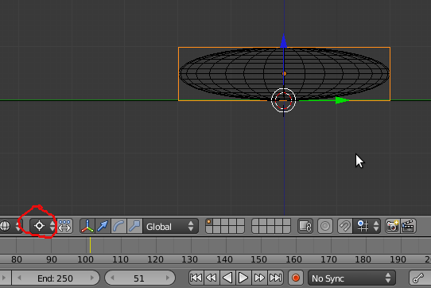9- Para obter uma visão mais completa do movimento efectuado pela bola, vamos activar os Motion Paths. Define os parâmetros que pretende e clique em Calculate Paths para ver uma linha descrevendo o movimento da nossa esfera.
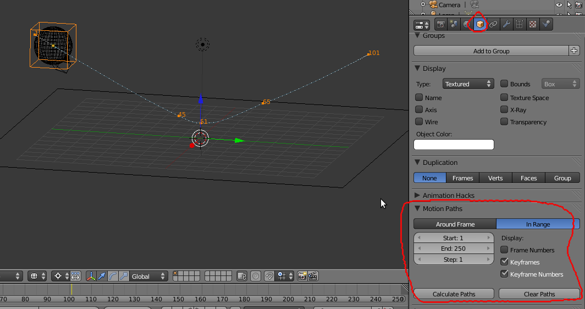10- Na janela Dope Sheet, resolvemos experimentar diminuir o tempo de saída (tempo entre as frames 51 e 65). Seleccionámos com caixa (B) as keyframes (LocRotScale) aplicadas na 65 e na 101, as duas colunas de “diamantes” (são keyframes) da direita, e movemos (G) as mesmas para a esquerda, na direcção da keyframe do ponto de contacto (frame 51).
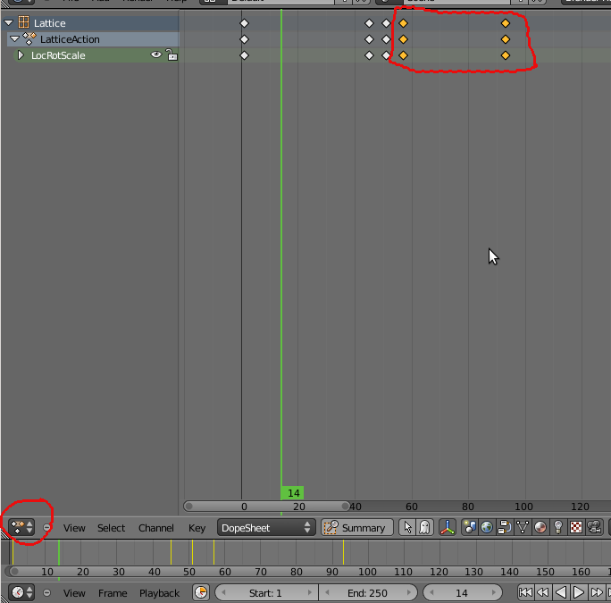...alterando também os números das keyframes no nosso Motion Path.
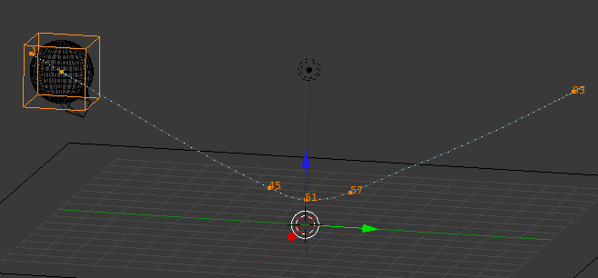11- Como já deve ter reparado, a nossa animação tem um “Ease In” e “Ease Out” automático. Ou seja, acelera e desacelera progressivamente quando se aproxima e afasta de keyframes.
Em muitos casos, esta é de facto a maneira mais correcta de construir animação, corresponde a outro princípio clássico da animação. No entanto, não faz muito sentido nem é realista ver a nossa esfera desacelerar quando se aproxima da keyframe final...
Passe para a janela Graph Editor. Utilize o BMR para aproximar/afastar e o CTRL + BMR para ajustar a dimensão à janela, visualizando melhor as keyframes.
O que vamos alterar é a interpolação entre os dois conjuntos finais de keyframes, os mesmos que modificámos no passo anterior. Na imagem abaixo, as keyframes já surgem seleccionadas porque estavam seleccionadas na Dope Sheet. Se observar com cuidado, é fácil reparar que entre as keyframes existe sempre uma linha curva que corresponde ao acelerar/desacelerar.
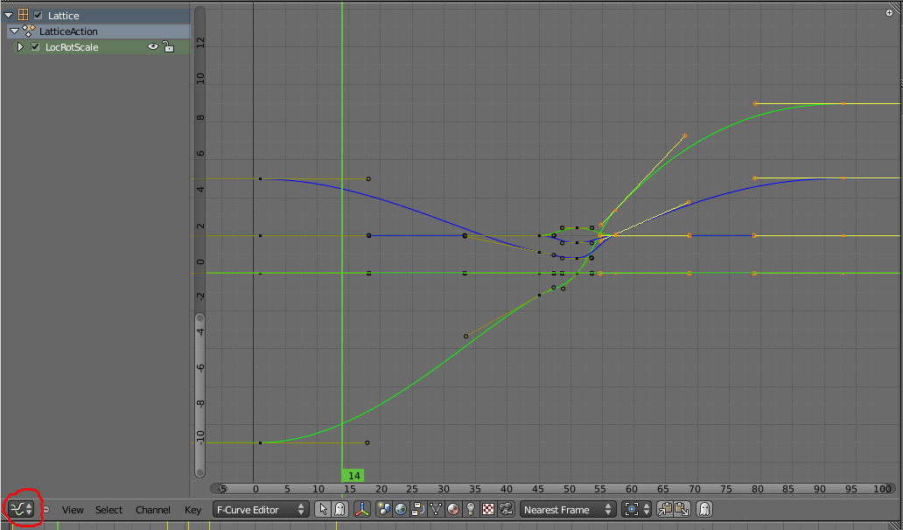12- No menu Key, submenu Interpolation Mode, seleccione o mode de interpolação Linear para substituir a curva entre os dois últimos conjuntos de keyframes por uma linha linear.
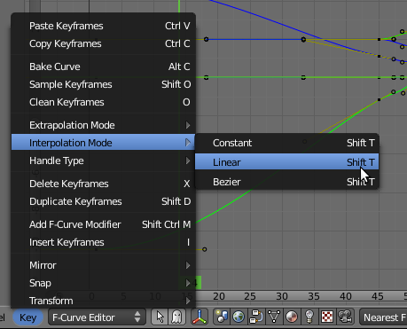A janela Graph Editor, onde a animação está representada através de gráficos, pemite visualizar e editar as keyframes existentes numa animação. É uma ferramenta extremamente importante e sofisticada. Aqui ficam algumas notas para ajudar na exploração...
a) Pode fazer Zoom (BMR / roda do rato), deslizar o conteúdo da janela (BMR e deslocar o rato), ajustar altura/largura do conteúdo (CTRL+BMR e deslocar o rato).
b) Pode esconder ou mostrar canais (clique no ícone do olho que existe ao lado de cada canal ou tipo de keyframe).
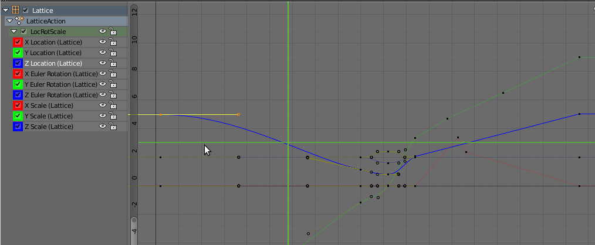a) Pode ver/editar diversos tipos de keyframes (i.e. materiais, texturas, caminhos, etc.) para além dos relacionados com movimento/escala dos objectos. Para escolher o tipo de canais (ou linhas) de keyframes que pretende visualizar e editar, utilize a barra de ferramentas.
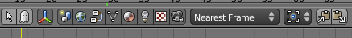b) Pode bloquear canais (clique no cadeado que existe ao lado de cada canal ou tipo de keyframe) para evitar alterações/edições não desejadas.
c) Pode seleccionar apenas um canal (uma linha) e editar individualmente as keysframes (os pontos) com os atalhos habituais: tecla TAB para activar o Edit Mode, seleccionar com o BDR, G para mover, X (horizontal) e Y (vertical) para trancar o movimento aos eixos, etc. O H serve para modificar o tipo de manipulador do ponto (i.e. Vector, Free, etc.)
d) Para criar pontos novos (novas keyframes) directamente no Graph Editor, clique em CTRL+BER no local da linha onde pretende inserir a nova keyframe. Para apagar, seleccione a(s) keyframe(s) que pretende apagar e utilize o X.
e) Para seleccionar várias keyframes pode utilizar a caixa (B), seleccionar uma a uma com SHIFT pressionado.
f) Pode utilizar a tecla N para esconder/mostrar uma barra de propriedades com funcionalidades muito úteis. Pode modificar o tipo de interpolação entre keyframes, posicionar com precisão total as keyframes, aplicar modifiers, etc. Um dos modifiers mais úteis é o Cycle, permite controlar a repetição de uma animação criando ciclos.
a) Interpolação é o cálculo das frames intermédias (frames entre as keyframes) necessárias para completar uma animação. O Blender apresenta 3 tipos de interpolação.
Constant: animação sem suavidade, “quadrada”, salto.
Linear: caminho mais curto entre os pontos, “recta”, velocidade constante.
Bezier: animação mais “smooth”, “curva”, aceleração e desaceleração.
b) Extrapolação é o cálculo para além da última keyframe e antes da primeira. Permite transformar uma animação com algumas keyframes numa animação contínua, infinita.